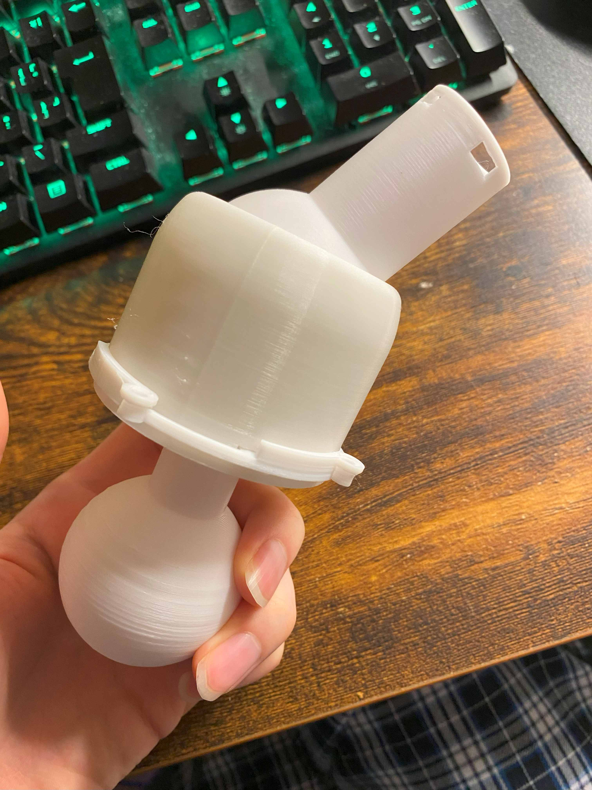
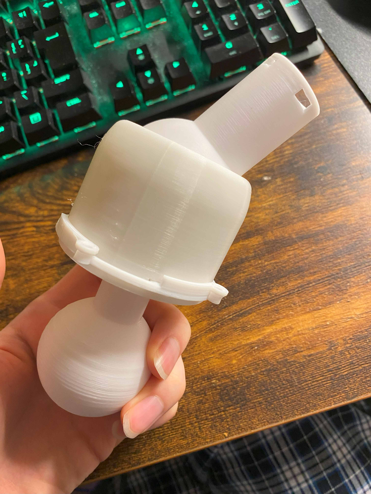

１．進捗と問題
関節制作の進捗：約二間接分が完成・間接の傾き具合を確認
過程で出てきた問題：急ごしらえの接続部の調整・傾き具合の調整
今後の課題：全体ができ始めた時の挙動や問題の確認→ひもで引っ張る方法の確認
設計に対しての微調整
過程で出てきた問題：急ごしらえの接続部の調整・傾き具合の調整
今後の課題：全体ができ始めた時の挙動や問題の確認→ひもで引っ張る方法の確認
設計に対しての微調整
２．問題について
前回急ごしらえで作った接続部が多少壊れてしまったため調整と強度アップを行った
またその際に追加で部品をつくり間接内の無駄な動きを減らすことに成功
ただし、３Dプリンターの使い方がまだまだ未熟なためか全体的にきつくなりすぎな気もする
組み立てる際にかなり力を要するため、がたつきはほぼなくなったが一時分解することも面倒に
これもまたミリ単位の調整が設計全体に必要かも（変に調整するより今のままでもいい気もする）

間接の傾き具合に関しても約３０度ほどだったのを４０～４５度程にするために上側部分の支柱にあたる
所を細く再設計した
多少強度の心配はでるものの動かした具合はかなりよく感じる
またその際に追加で部品をつくり間接内の無駄な動きを減らすことに成功
ただし、３Dプリンターの使い方がまだまだ未熟なためか全体的にきつくなりすぎな気もする
組み立てる際にかなり力を要するため、がたつきはほぼなくなったが一時分解することも面倒に
これもまたミリ単位の調整が設計全体に必要かも（変に調整するより今のままでもいい気もする）

間接の傾き具合に関しても約３０度ほどだったのを４０～４５度程にするために上側部分の支柱にあたる
所を細く再設計した
多少強度の心配はでるものの動かした具合はかなりよく感じる
３．総評
本当に細かな調整は今後必要になるかもしれないが関節部分の設計はおおむね完了したといえる
ただ今後長くなるにつれてひもで引っ張る構造がどこまで通用するかの確認は必須
おそらく何かしらの問題は出るはずなので代替案は多少考えていたほうが良いかも
またそれ以外に今後作る関節部分はさらに小さくなっていく想定なので
縮尺を小さくして解決するならそれでいいがおそらくまた接続部の設計が必要になると考えられる
ただ今後長くなるにつれてひもで引っ張る構造がどこまで通用するかの確認は必須
おそらく何かしらの問題は出るはずなので代替案は多少考えていたほうが良いかも
またそれ以外に今後作る関節部分はさらに小さくなっていく想定なので
縮尺を小さくして解決するならそれでいいがおそらくまた接続部の設計が必要になると考えられる
今後の予想される課題一覧：
強度が今後足りるのか・ひもの引っ張りを利用した構造はうまくいくのか
曲げるときにかくつかないか・動作の精密性は良好か⇒全体ができてからしか具体的にはわからない
音声認識はつけたとしてどうするのか・水平装置はどうするか⇒ソフトウェアとの兼ね合いもある
現状から考えて置ける課題:
細かな動きをするために先のほうの構造をどうするのか⇒なんとなく構想は浮かび始めてはいるくらい
完成像の認識:
何をできるようにするのか＝ものを持てる・取れる・体を支えられる（60～70％くらいのイメージ像）
強度が今後足りるのか・ひもの引っ張りを利用した構造はうまくいくのか
曲げるときにかくつかないか・動作の精密性は良好か⇒全体ができてからしか具体的にはわからない
音声認識はつけたとしてどうするのか・水平装置はどうするか⇒ソフトウェアとの兼ね合いもある
現状から考えて置ける課題:
細かな動きをするために先のほうの構造をどうするのか⇒なんとなく構想は浮かび始めてはいるくらい
完成像の認識:
何をできるようにするのか＝ものを持てる・取れる・体を支えられる（60～70％くらいのイメージ像）